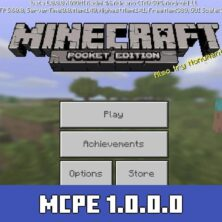
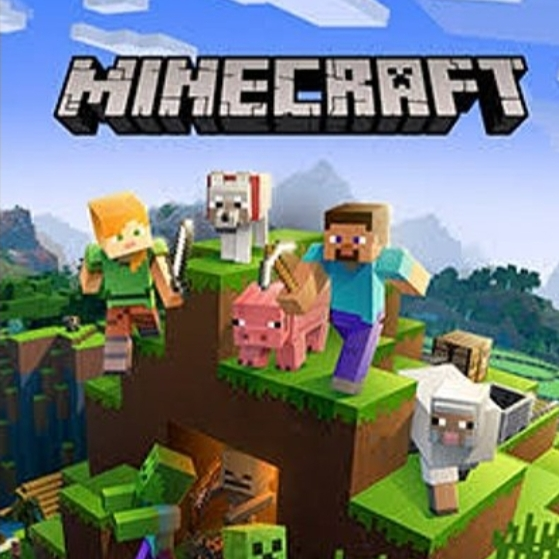
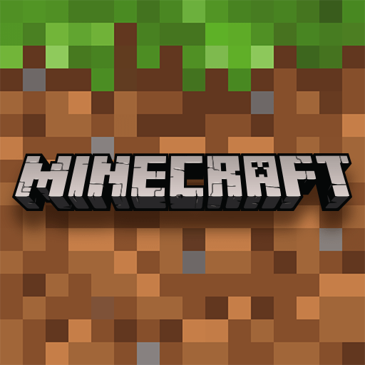

Minecraft
Game Legend
Sejarah Berdiiri
2009
Sejarah game Minecraft dimulai pada 2009 melalui garapan tangan seorang programmer asal Swedia, Markus Persson. Proses pengembangan game sandbox ini sendiri terinspirasi dari dua game serupa, yakni RubyDung dan Infinimer. Minecraft mengombinasikan aspek RPG dan base-building dari RubyDung dengan aspek penambangan berbasis blok dari Infinimer. Melalui kombinasi apik tersebut, Minecraft Java Edition akhirnya diluncurkan.

2010-2011
Game Minecraft kemudian mendapatkan pengembangan lebih lanjut melalui rangkaian update alpha dan beta dari 2010 hingga 2011. Ada sejumlah aspek gameplay yang turut ditingkatkan, seperti sistem crafting dan dungeon. Selanjutnya, game Minecraft versi penuh akhirnya secara resmi dirilis pada November 2011. Setelah meluncurkan versi 1.0, Minecraft kemudian melahirkan rangkaian update terbarunya dengan berbagai peningkatan konten game yang lebih menarik.
Game Populer
Minecraft diakui secara terkenal, memenangkan banyak penghargaan, dan telah digambarkan sebagai salah satu permainan video paling berpengaruh dan terhebat sepanjang masa. Media sosial, parodi, adaptasi, merchandise, dan konvensi MineCon tahunan memainkan peran besar dalam mempopulerkan permainan.

Alur Minecraft
Berawal dari karakter bernama steve dan alex yang ingin menaklukkan dunia Minecraft dengan cara mengalahkan ender dragon. untuk melawan ender dragon mereka harus pergi ke end world melalui end portal dan cara untuk mengaktifkan portal menuju end world tempat dimana ender dragon berada steve dan alex harus memasang 12 ender eye di end portal. sembelum mereka pergi mereka mempersiapkan perbekalan dan peralatan untuk mengalahkan ender dragon

Alur Minecraft
Mereka menambang, menebang pohon, mempersiapkan peralatan dan pergi dari desa ke desa yg lain untuk mencari end portal yang berada di bawah suatu desa. untuk mendapatkan 12 mereka harus pergi ke nether dengan nether portal dan nether portal dapat di buat dengan cara menggabungkan 14 obsidian block lalu membakarnya dengan korek untuk mengaktifkannya. setelah mengalahkan ender dragon mereka kembali ke dunia asal mereka dan menjadi pemenangMinecraft
Suasana Minecraft